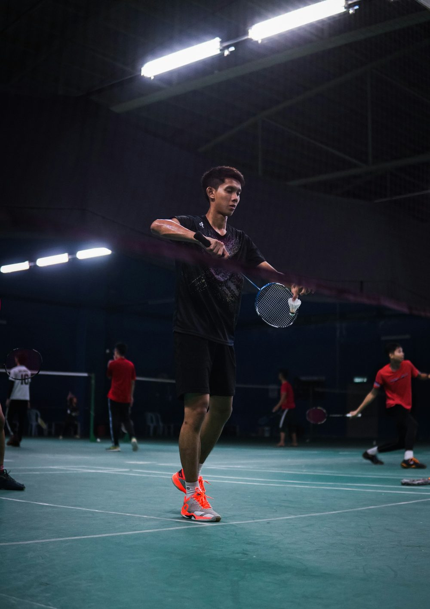
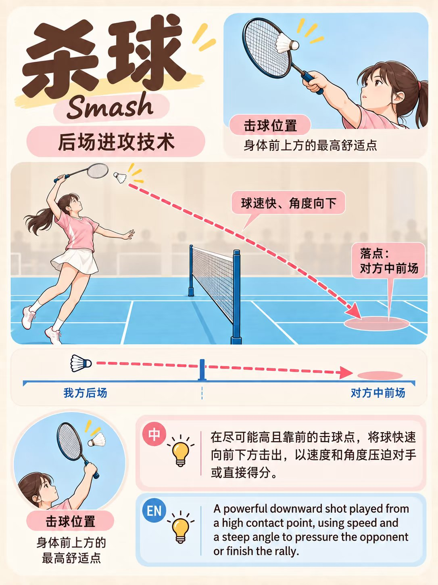
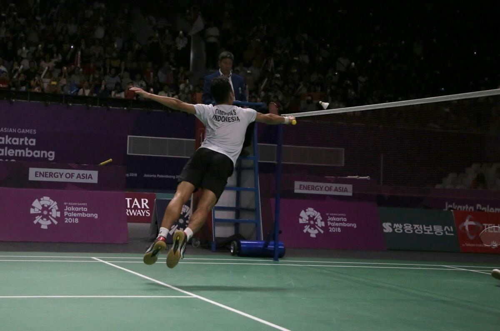
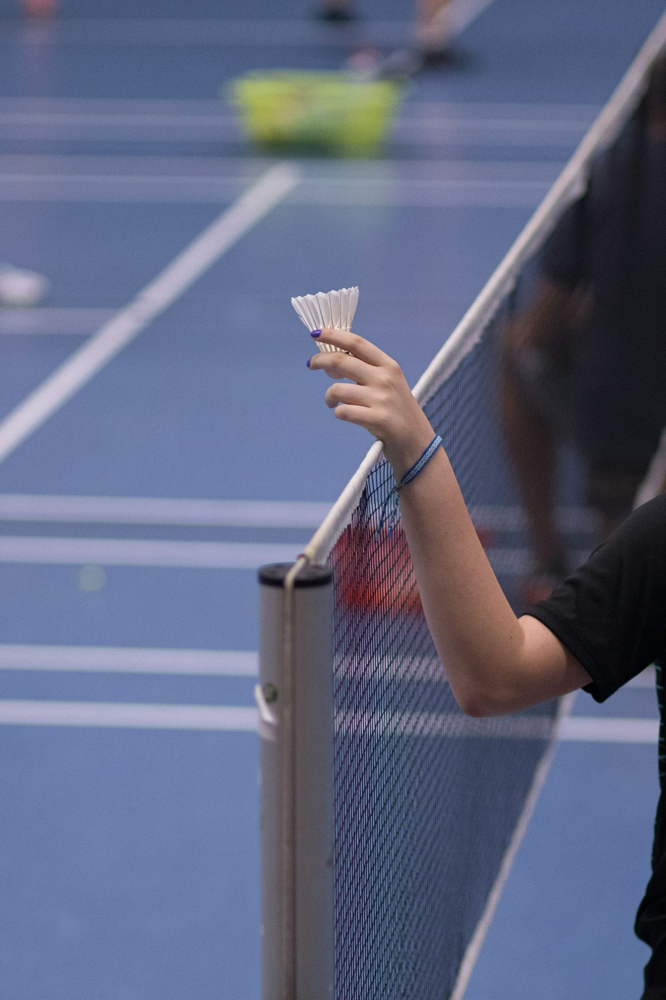
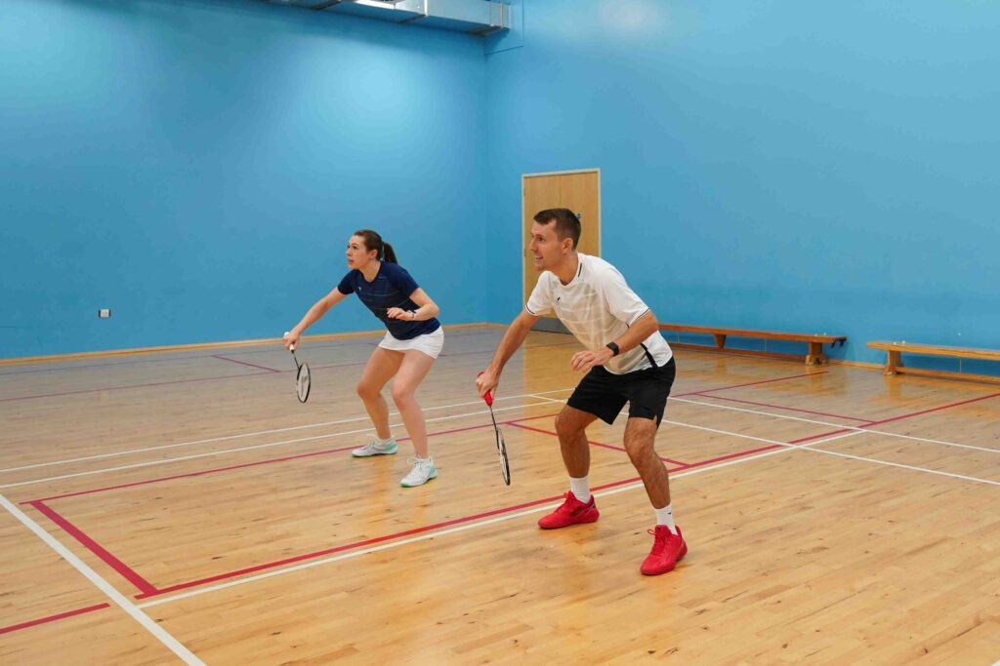
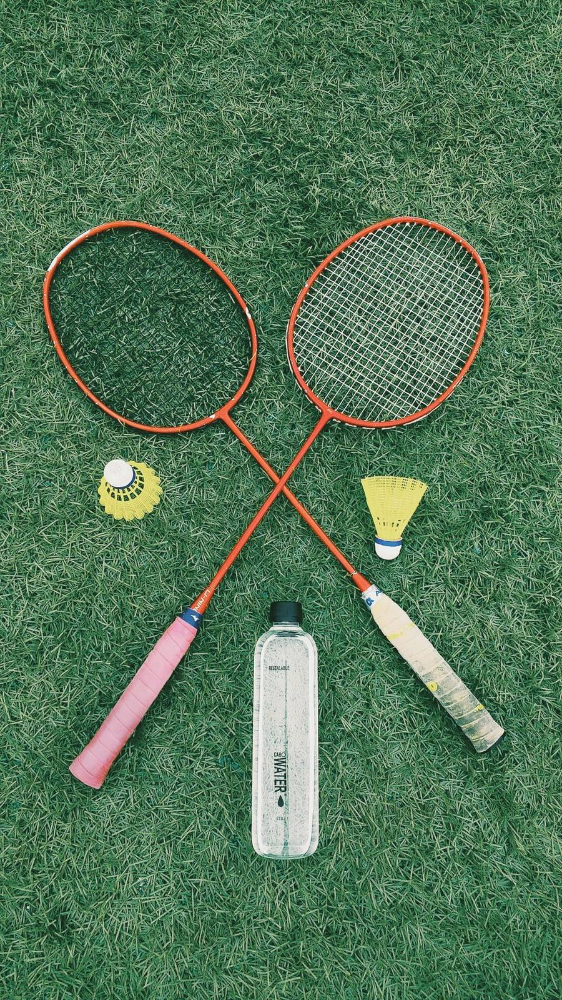
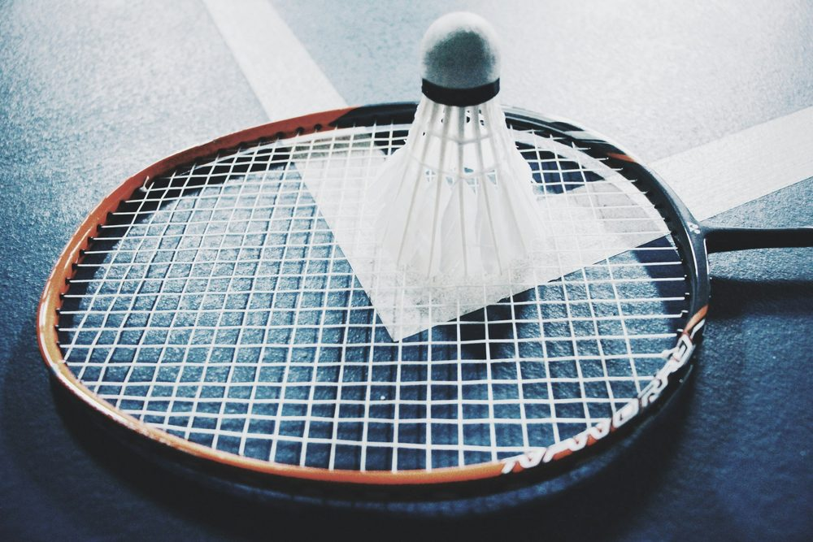
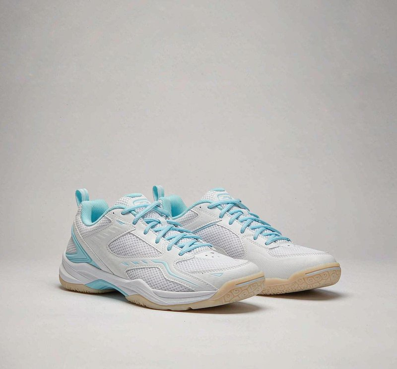
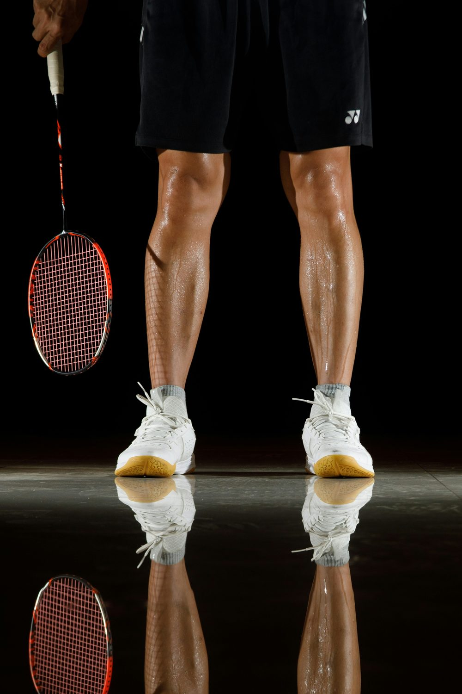

成人羽毛球
自学系统
欢迎加入星羿毛毛球大队，一起涨球，一起健康生活
15107920066（微信同号） 🏆 赛事管理 · 比赛现场平台（签到 / 配对 / 录分 / 实时榜 / 颁奖图）→C单人训练计划 · 周打卡（首页）
一周打卡表：每天 30-40 分钟，按科学顺序涨球。打完当天勾一下 ✅。
① 先量后质：动作没定型前别求快，慢动作找发力顺序；
② 每天一小步：30 分钟胜过周末猛练 3 小时；
③ 周日是节点：来星羿开放场把一周练的实战一遍，验证动作对不对；
④ 伤痛即停：肩/膝不适立刻停，冰敷休息，别硬撑（遵循训练安全原则）。
↑成长等级（五档进度）
对号入座，别焦虑。成人业余从 L1 到 L3 通常 3-6 个月规律训练，L4 需 1 年以上；等级只用来找方向，不用来比高低。
A入门自检 + 球感基础
入门自检：先认清自己
动手前先测四项，知道自己卡在哪，后面练起来才有方向。
真实握拍示范：虎口卡侧棱、像握手一样自然握住- 握拍自检：虎口卡在拍柄侧棱、像"握手"一样自然 → 合格；攥成拳头 → 先改握法，否则手腕打不开。
- 球感自检：原地颠球连续 10 个不落地 / 对墙击球连续 5 个 → 合格；总接不住 → 先练下面的球感。
- 站位自检：双脚与肩同宽、膝盖微曲、重心在前脚 → 合格；僵直站着 → 永远启动慢。
- 高远球自检：对墙打高远能连续 10 拍不落地 → 合格；总下网/出界 → 先练动作二高远球。
- 步法自检：原地米字步跑 6 点不喘、回中利索 → 合格；跑完站不稳 → 先练动作一步法。
球感基础（颠球 / 对墙 / 控球）
握拍和步法之前，先让球"听你的话"。球感差，后面所有技术都使不上劲。
球感基础图示：颠球 / 对墙击球 / 空中控球 三个动作拆解- 原地颠球：拍面放平，轻颠球底部，让球直上直下，先练稳不跑位。
- 对墙击球：离墙 2-3 米，轻打轻接，连续回合越多越好，培养击球节奏。
- 空中控球：把球挑高，等落下再挑高，循环控制，练习拍面角度微调。
- 目标击球：对墙画圈或贴点，连续把球打到目标区域，提升控球精度。
- 每日 5 分钟：球感不需要大强度，贵在天天碰，手指手腕自然灵活。
✅ 纠正：先轻、慢、稳，力度控制在能把球接回来即可。
① 颠球计数：连续 10 个 × 5 组，掉球归零重来；
② 对墙回合：连续 5 个回合 × 5 组；
③ 高低控球：挑高→等落→再挑高，10 次 × 3 组。
🧪自测中心（打法天赋 · 等级评级 · 羽球人格）
三分钟认清自己：天赋偏向、当前等级、你是哪种羽球人格。完成后可生成结果图，长按保存分享。
① 打法天赋自测
每题 1=很弱，5=很强，按真实感觉拖。
② 业余等级评级
每项 1=初学，10=稳定，按真实水平打分。
③ 羽球人格
每题选最像你的一项。
1. 场上最让你爽的是？
2. 你更想练成？
3. 比分落后时你倾向于？
4. 你最欣赏的球员类型是？
5. 你打球的主要动力是？
6. 你理想的一场胜利是？
7. 你愿意为变强付出？
B核心技术库（5 组 19 式）
组 A · 基础移动

真实球场：低重心、拍举胸前、随时准备蹬出⭐ 优先级：先。90% 成人打不好，不是手的问题，是脚到不了位。先练脚，再练手——脚到了，手才有发挥空间。
- 时机：盯对手球拍，在他刚触球的瞬间小跳，落地球正好飞出、你已顺势蹬出。
- 做法：双脚略宽于肩、膝盖微屈、前脚掌着地脚跟悬空、臀部下沉、拍举胸前，离地仅 1-5cm，只用脚踝发力。
- 落地：前脚掌缓冲，远侧脚先落地顺势蹬出（正手方向左脚蹬、右脚先出；反手相反）。
✅ 改：启动信号是"对方击球"不是"球过网"；早跳松劲、晚跳蹬不出。无球练"哨响=起跳"反射。
- 并步：重心右移，右脚迈一步、左脚立刻跟上并拢，像"滑"过去，步幅小频率快，用于上网/接杀短距。
- 交叉步：左脚向右前迈、右脚越过左脚再跨大步，步子大重心稳，用于后退打后场、大角度救球。
- 蹬跨步：最后一步异侧脚后蹬、同侧脚向前跨大步，后脚拖地缓冲，用于上网击球与底线两角。
✅ 改：短距并步、长距交叉；蹬跨脚尖朝来球方向适度外展、膝盖不超脚尖。
- 跑动：近距并步/垫步、远距交叉步、最后一步蹬跨制动击球；全程低重心、不低头、小步幅。
- 回中：每拍击球后用小碎步快速退回中心点恢复预备姿态，再启动下一拍。
- 节奏：无球慢走米字定型 → 有球多球喂六点 → 打乱顺序模拟实战。
✅ 改：不回中就失去下一拍最短距离；重心"平移"回中，用影子步固化。
组 B · 后场技术

真实后场：蹬地、转体、击球点在前上方⭐ 先高远、后进攻。高远压到底线是成人少走弯路的关键——别一上来学杀球。
- 侧身架拍：左肩对网、左脚前右脚后、重心在右脚膝微屈；右手屈肘举至右肩上方，拍面朝前，左手上举指球。
- 引拍蓄力：重心在右脚，右臂向后上方引至头后、肘高于肩，手腕自然后伸，拍面竖直。
- 蹬转发力：右脚蹬地、腰胯向前转带动肩臂，顺序：蹬地→转腰→转肩→抬肘→甩小臂→闪腕。
- 击球点：在右肩前上方、手臂伸直最高处，正拍面击球托底部，拍面稍向前上方微仰。
- 随挥收拍：手臂顺势向左前下挥、收至左腰，重心移前脚，立刻回中。
✅ 改：刻意侧身左肩对网；迎球让点击前上方；空挥练"松→紧"瞬间发力；初学拍面轻上扬。
- 劈吊（求快）：击球瞬间拍面切击球托侧部，前臂内旋快，球速快、下坠陡，适合逼对手来不及上网。
- 滑板吊（求骗）：前臂内旋带手腕手指"抹"过去，出球方向与身体朝向相反，迷惑性强，多吊对角。
- 轻吊（收吊）：几乎不发力，靠手腕收力轻托，球慢弧高贴网，用于被动过渡。
✅ 改：前期引拍一律同高远/杀；触球后才变拍面；先保证滑过网、再练贴网、再加速。
- 重杀（求狠）：动作完整全力下压，击球点稍靠前，球速最快落点深（中后场），落地弹跳低。
- 点杀（求快/变）：引拍幅度减半，靠前臂+手腕短促闪动"点击"下压，突变性强、消耗低，单打常用。
- 落点：直线（压同侧深角）、斜线（切击拉对角）、追身（压胸腹前，双打常用）。
✅ 改：提高击球点、拍面前倾击球托后下方；刻意练三落点；杀后顺势收拍立即回中举拍封网；新手先原地杀。
- 一致引拍：前期架拍/引拍/击球点完全模仿重杀/高远，让对手无法从引拍预判。
- 劈杀：触球一瞬手腕快切，斜切球托使球边旋边快速下坠，多为斜线大角度。
- 劈吊：更轻，靠切击减力，球速快落点离网较远，作主动下压突击。
✅ 改：所有后场球前期动作统一、仅最后变拍面；控制切击角度保留下压速度；明确场景再选。
组 C · 中前场技术

真实网前：抢高点、贴网、小球控制⭐ 优先级：中。控制网前、连接前后场，是进阶分水岭。共同基础：侧身对网、右脚弓步、上体前倾、拍前伸、小动作只用手腕手指。
- 准备：与挡网/抽球一致（一致性重要），反拍拇指顶住、触球发力 80-90%。
- 挥拍：由举拍位向前上约 45°，手腕锁住拍面不旋转，避免切拍打不准甜区。
- 落点：挑两腰（对方两人两侧空当）而非中间；高度刚好飞过对手头顶即可，别"见高不见远"。
✅ 改：挑前先想落点（两腰）；触球锁拍面手腕不松；出球不到位先查击球点/拍面。
- 架势：半蹲、重心低、拍子举在身前网口高度，正反手握切换要快（反手覆盖约 70% 面积）。
- 发力：小臂+手腕短促闪动，拍面略前倾，球走平弧线压向对方中场两腰。
- 变线：抽挡结合、突然加力压对角或变节奏，逼对手起高球给你进攻。
✅ 改：抽球压低走平弧；抓住对方回球稍高立刻下压；正反手转换练到自动。
- 放网：拍面稍前下倾，前臂带手腕手指"前送"轻击球托底部，轻送过网贴网下落；离网近则力小、加大后仰。
- 搓球：拍面稍前倾，用腕指向前"切削"球托底部（正手切右下、反手搓右侧后底），使球侧旋滚动过网。
- 要点：抢高点击球、出手快、手心留空靠拇指+食指"捻"拍柄产生切刷。
✅ 改：全程小力量只控落点；来球近减小力加大后仰；握拍掌心留空、触球瞬间轻收；多球定点 30-50 个。
- 正手勾：击球托右侧、手腕向左内勾。
- 反手勾：击球托左侧、向右内勾。
- 关键：靠手指手腕巧劲，绝不大臂；准备与搓/放完全相同，触球刹那才改拍面朝向。
✅ 改：保持同准备、晚变线；勾动靠腕指小动作；多练"同准备、晚变线"欺骗节奏。
- 拍面：前倾几乎与网平行，前臂带腕指快速"闪动"击出。
- 发力：正手多用食指发力、反手多用拇指发力，击球点尽量靠前。
- 原则：推得快、推得深，不给对手进攻机会。
✅ 改：拍面近平行、出手脆快；食指/拇指瞬间加力"弹"出；抢网口前点；多球练推两腰宁可稍平勿冒高。
- 准备：举拍举肘在来球低于网高时就位，脚步留空间别贴网太近。
- 发力：拍面前倾，前臂带腕指快速闪动，击球后立即收拍避免触网。
- 前提：击球点必须高于网才能向下扑，否则改放网/勾对角。
✅ 改：高于网才扑、用小臂+手指短促发力、击球后立刻收拍、脚步留空间。
组 D · 发球与接发球

真实发球接发：抢高点、压低球路、准备第三拍⭐ 先发后接。单打靠发高远、双打靠发网前；接发抢高点、不送高球给对方进攻。发球必须合规：不踩线、不超腰、拍框顶端不高于握拍手。
- 站位：左脚前右脚后侧身，重心在右脚，左手持球自然下落。
- 挥拍：正手握拍由后下向前上挥，转体送髋，大臂带前臂内旋，最后手腕闪动发力。
- 击球：以正拍面在右前上方（约膝高）击球，球向前上方高弧线飞行、垂直落对方端线附近。
- 随挥：球拍随挥至左肩上方，重心移至左脚。
✅ 改：加强前臂内旋+手腕闪动；放球自然下落找击球点；降低击球点加向前上发力；握拍放松触球瞬紧。
- 正手发网前：引拍同高远，击球时握拍放松靠手指控制，手腕收腕"推送"，球擦网落入对方前发球区。
- 反手发网前：面向网两脚前后站，反手握拍拇指顶宽面、拍头低于手（防过手），屈指伸腕拇指前端发力切送，弧线最高点略高于网。
- 合规：击球点低于腰、拍头低于手、脚不移动不踩线。
✅ 改：轻送手腕、落点贴前发球线附近；力量宁小勿大；单独练抛球固定高度；握拍靠前拍头低于手。
- 站位：靠前、举拍身前、重心压低，做分腿垫步准备。
- 球路选择：来球略高→扑（封网得分）；贴网→搓/放（逼起球）；稍高想转攻→推两腰/推后场；实在被动才挑。
- 跟进：接完立刻回位举拍准备下一拍（若放/搓质量高准备上网封；若推/扑准备连贯）。
- 第三拍衔接：发球后你是"网前球员"——发短球就保持前压举拍，搭档站身后覆盖后场；对方回挑则后场上前杀，转前后进攻。
✅ 改：把"挑高"当最后选择先练推/放；站位前压拍举网口；抢高点触球即出；接完"跟进半步+举拍"；发完向前举拍。
组 E · 防守与过渡

真实对抗：防守不是挨打，是变线转攻的第一拍⭐ 优先级：后。防守不是挨打，是带强烈反击意识的摆脱——把球压低、变线调动、制造攻防转换。
- 架势：双脚略宽于肩、双膝微屈、重心下沉，拍在身前腰到胸高度、拍头略高于手。
- 借力：反手握法（拇指）覆盖约 70% 面积，拍面微竖约 45°，用拇指顶住借杀球速度轻挡。
- 落点：挡贴网而非近网，让对手不在高点；双打挡网后必须上网封网。
✅ 改：拍面竖起横向去挡、不切不旋；去掉大引拍只靠拇指顶借力；挡时脚步前迈准备跟进；挡贴网不挡中路。
- 准备：与挡网/抽球一致（一致性），反拍拇指顶住、触球发力 80-90%。
- 挥拍：由举拍位向前上约 45°，手腕锁住拍面不旋转。
- 落点：挑两腰（两人两侧）而非中间，高度刚好过对手头顶即可。
✅ 改：挑前想落点（两腰）；触球锁拍面手腕不松；出球不到位先查击球点/拍面；优先挡网/抽球转攻、挑球当最后手段。
- 握法：反手握法（拇指平贴宽面）提供刚性支点，固定不换。
- 击球点：抢在身前（不是身后），简单一挡送网前，加力可变挑球或平抽反攻。
- 原则：有步法时间就绕头顶（更主动），没时间才用反手过渡；网前反手放/搓/推触感优先于力量。
✅ 改：固定反手握法、练正反快速切换；多球喂反手侧放松手拇指推挡先稳再力；强调击球点抢身前。
🎒装备与选拍
买对不买贵。成人新手最容易在"高磅 + 硬拍"上踩坑——参数看不懂，钱白花还伤肩。

真实球拍：看懂参数再入手，避免高磅硬拍伤肩① 看懂球拍参数
② 穿线磅数（线床张力）

真实线床：磅数决定弹性与控球，新手别盲目追高③ 成人选拍决策树
想练进攻 / 力量好：4U(足可试 3U) + 头重(>295mm) + 中硬杆 + 24-25 磅。
想练防守速度 / 双打网前：4U 或 5U + 头轻(<285mm) + 破风/混合框 + 23-24 磅。
④ 球鞋比球拍更该买对

真实羽毛球鞋：减震、侧向支撑、生胶防滑底缺一不可羽毛球鞋直接关系膝盖与脚踝：减震（吸落地冲击）、侧向支撑（防救球崴脚）、生胶防滑底（急停咬地）、抗扭片。别穿跑步鞋打球——跑鞋高重心、侧向包裹弱，极易扭伤。试穿下午脚微肿时、留 0.5-1cm 余量。
🛡热身与防护
羽毛球最伤膝盖。赛前不热身、赛后不拉伸、平时不练腿，三个月必伤——这 15 分钟比买贵拍有用。
① 赛前 10 分钟热身（防伤关键）
- 全身关节激活（3min）：腕踝膝髋肩颈环绕各 10 次，轻微有氧让体温升起来。
- 膝关节预热（2min）：提踵走、膝关节环绕、弓步压腿（膝盖不超脚尖、不内扣）。
- 上下肢激活（3min）：持拍空挥正/反手各 20 次、胸肩伸展、手腕绕环，模拟真实发力顺序。
- 神经激活（2min）：快速小碎步横移、听口令急停急转，唤醒反应。
② 赛后 5 分钟拉伸（缓解酸痛）
- 股四头肌：扶墙单腿拉脚跟向臀，15-30 秒×2。
- 腘绳肌：一腿伸直体前屈触脚尖，15-30 秒×2。
- 髂腰肌：单腿弓步跪姿前推骨盆，15-30 秒×2（常被忽略）。
- 小腿：推墙勾脚后腿伸直，15-30 秒×2。
- 泡沫轴：大腿前后侧各滚 30-60 秒（避关节）。
③ 日常护膝（每周 3 次，每次 15 分钟）
👫双打原则与战术

真实球场：双打站位低、脚步快、随时举拍双打是"站位 + 轮转 + 沟通 + 战术"的棋局，个人技术只占一半，另一半是与搭档的协调。
① 发球与接发
双打以短发球为主（贴网、不送高），压线、不违例；发完立刻前压举拍当网前人，搭档身后覆盖后场。接发抢高点、压低或压平，能推就推不挑高；接完准备下一拍。
② 站位与轮转
进攻前后站：一人网前封、一人后场杀。防守平行站：两人各守半场、一起动。攻转守被挑高立刻变平行；守转攻挡/抽高质量即上前变前后。谁打谁补，中间球归正手。
③ 进攻
杀中路结合部（两人中间最难受）；杀完立刻封网、举拍在网口；平抽结合变角度保持压力。杀球目标可选追身、中路、边线。
④ 防守
平行站位、低重心、拍在身前。接杀挡贴网（杀直挡斜/杀斜挡直）；挑两腰不挑中间；防转攻第一拍最重要——挡/抽高质量立刻转前后进攻。
⑤ 沟通
大声喊"我的 / 你的"；报比分、提醒站位；失误不埋怨，下一分重来。非语言：身体朝向、眼神也传递责任。
⑥ 常用战术
★品牌反哺 · 导出即发
每个技术模块卡片都是现成的短视频素材——后续将内置 抖音/小红书 30s 口播脚本（一键复制 + 图解下载），方便你直接发帖引流。
★系统总览：4 大模块
整套系统服务一个目标：让成年散客/会员，没搭档、没教练陪练也能系统进步，学完自然想到来星羿实测、约课、订场。
💼商务合作
欢迎品牌、场地、赛事、课程等任何形式的合作洽谈，一起把羽毛球这件事做大。
👥教练应聘
有羽毛球教学 / 陪练经验，想加入星羿教练团队？随时联系我们。
📰羽球大事件
每周自动更新 · 来自中羽在线 / 世界羽联 / 主流体育媒体，帮你跟上羽球圈的大事儿，也欢迎投稿身边赛事与馆内活动。
韩国媒体 OSEN 报道，韩国羽协 8/28 公布中国大师赛参赛名单，女单世界第一安洗莹在列、计划 8/30 出征深圳。此前她刚打完世锦赛且仍在伤病恢复期，主教练朴柱奉曾希望她休战专心备战亚运，但安洗莹本人为维持比赛手感决定出战；按世界羽联规则，超级 750 属强制参赛，无医疗证明缺席将面临罚款。这样一来女单世界前五（安洗莹、王祉怡、山口茜、陈雨菲、韩悦）一个不落全部到深圳。一组数据能让人瞬间清醒：8/25 世界羽联第 35 周排名，安洗莹积分 121287 分，已连续 98 周位居女单世界第一，大师赛打完后 9/8 发布的第 37 周排名她将达成连续 100 周世界第一；重返世界第二的王祉怡积分 103989 分，差距近 1.8 万分——意味着哪怕王祉怡在深圳夺冠、安洗莹直接弃权，也无法反超。安洗莹本赛季战绩 42 胜 1 负、胜率 97.4%，唯一那场败仗是今年 3 月全英公开赛决赛 0-2 负于王祉怡，那也终结了她跨赛季 36 连胜。签位上安洗莹落在上半区（首轮对世界第 17 林湘缇，八强大概率碰韩悦，半决赛可能再遇山口茜），王祉怡与陈雨菲双双落在下半区且分处不同 1/4 区，有望会师半决赛、锁定下半区决赛资格——这也是国羽主场留住冠军最现实的路径。需要警惕的是上月安洗莹因伤缺席的中国公开赛，山口茜连胜韩悦、王祉怡、陈雨菲夺冠，国羽主力接连折戟日本选手。
来源：韩国 OSEN / 腾讯新闻 / 搜狐体育 / 世界羽联第 35 周排名2026 李宁·中国羽毛球大师赛 9 月 1 日至 6 日在深圳市体育中心体育馆举行，超级 750、总奖金官方确认 125 万美元（高于此前流传的 115 万），冠军 11000 分直接挂钩年终总决赛席位，即便首轮出局也有 1170 分。签表把大量本该在八强、四强才上演的对决压到了首轮。想现场看球的球友可照这份日历挑票：9/1 首日打 5 个单项上半区首轮，头牌是石宇奇 vs 骆建佑（两届世锦赛冠军对话，此前 7 次交手石宇奇 4 胜 3 负，但最近一次 2025 亚锦赛八强骆建佑取胜），同日还有 06 后小将胡哲安超级 750 首秀碰丹麦名将、胡珂源/林祥毅挑战印度兰基雷迪/谢提，去年大师赛冠军翁泓阳、混双凤凰组合、世锦赛女单冠亚军安洗莹与山口茜均计划登场；9/2 是梁伟铿/王昶世锦赛夺冠后首秀（潜在对手姜珉赫同为世锦赛冠军），另有李诗沣 vs 奈良冈功大的世锦赛复仇战、王祉怡 vs 金佳恩（去年正是金佳恩在此淘汰她）；9/3 第二轮种子集中登场，含石宇奇 vs 翁泓阳国羽内战、女双世界第一刘圣书/谭宁首轮轮空后的赛季首秀；9/4 五单项 1/4 决赛、9/5 半决赛、9/6 决赛。票价：9/1-3 设一票看全天单日通票最低 80 元，22 周岁以下学生与 60 周岁以上观众享八折、优惠票最低 64 元，另有全程通票及 1/4 决赛、半决赛单日通票；凭票根还可在福田华富、园岭与罗湖笋岗街道的商圈、酒店、景区享消费优惠。每日出场顺序以赛前公布赛程为准。
来源：深圳市文化广电旅游体育局 / 深圳新闻网 / 今日头条·深圳幸福福田 / 搜狐体育此前板块按 BWF 赛历预告的亚运时间与名单节点需要更正：2026 爱知·名古屋亚运会羽毛球项目实际为 9 月 20 日至 29 日，9/20-24 团体赛先行、9/25-29 单项赛，先团体后单项共诞生 7 枚金牌，9/29 单项决赛日 7 金全部产生；中国羽协的参赛名单也并非 8 月底才公布，而是早在 6 月 16 日即已公示。国羽 20 人全主力出征——五单项均为双保险：男单石宇奇、李诗沣；女单王祉怡、陈雨菲；男双梁伟铿/王昶、陈柏阳/刘毅；女双刘圣书/谭宁、贾一凡/张殊贤；混双冯彦哲/黄东萍、蒋振邦/魏雅欣。团体赛男团在此基础上增加翁泓阳、陆光祖，女团增加韩悦、韩千禧。男团最大对手是印度：汤姆斯杯小组赛国羽 3-2 险胜印度，世锦赛上印度小将阿尤什又击败石宇奇，双方在伯仲之间；女团头号对手仍是韩国，上届亚运会与今年尤伯杯国羽两度在决赛负于韩国，这次是复仇局。混双则要正面回应世锦赛的痛点——冯彦哲/黄东萍与蒋振邦/魏雅欣双双进四强，却分别被法国吉凯尔/德尔吕拦下。主要对手名单也已明确：日本男单奈良冈功大、西本拳太，女单山口茜、宫崎友花；韩国安洗莹、徐承宰/金元浩、白荷娜/李绍希；中国台北周天成、王齐麟/邱相榤；泰国昆拉武特、因达农、李美妙、德差波/苏皮萨拉。9/29 这一天，也是整个 9 月羽坛的期末成绩日。
来源：中国羽毛球协会名单公示 / 新浪体育 / 网易体育 / 搜狐体育 / 亚洲羽联赛历9 月除了深圳大师赛与名古屋亚运，国内还有两场球友值得盯的比赛。① 2026 年全国羽毛球单项锦标赛 9 月 6 日至 13 日在安徽合肥少荃体育中心举行，为期 8 天、9/13 下午决赛。这是除全运会年外每年举办的全国最高水平单项大赛，共 23 支代表队、588 名运动员报名：男单 175 人、男双 144 对、混双 153 对首轮从 256 进 128 开始，女单 103 人、女双 106 对从 128 进 64 开始，全程单淘汰、无附加赛。上届单打冠军赵俊鹏与蔡炎炎再度报名，女双卫冕成员陈笑菲携新搭档出战，世界冠军刘雨辰继续代表北京队参赛并兼任教练，还有一批刚在亚青赛登台的国青小将代表各地方队亮相。② 2026 亚洲 U17 暨 U15 青少年羽毛球锦标赛 9 月 8 日至 13 日在成都温江区体育馆举行，15 个国家和地区、452 名选手参赛。最大看点是计分规则革新——经亚洲羽联批准，这是国内首个启用 3 局 15 分制的国际赛事。结合世锦赛已确认 2027 年起国际赛事全面改用 15 分制，温江就是新赛制的第一块试金石：节奏更快、逆转空间更大，对咱们业余球友的启示是发接发与开局抢分的权重会明显上升，落后 5 分就已经很难追。这项赛事被称为世界冠军摇篮，石宇奇、何冰娇、陈雨菲以及印度名将谢提都曾在此历练。票价 9/8-10 初赛 A 档 68 元、B 档 48 元，9/11-13 A 档 88 元、B 档 68 元。同期还有 9/1-6 印尼坤甸大师赛与 9/8-13 越南公开赛（均超级 100、12 万美元），国羽派董天尧、朱轩辰、黄荻、刘阳等新人练兵，主力在深圳拼 125 万美元，形成双线操作。
来源：中国羽毛球协会官网 / 今日头条·金温江 / 搜狐体育 / 网易体育8/24 世界羽联更新世锦赛后首期排名。男单：前世界第一石宇奇扣除去年世锦赛冠军积分后从第 1 跌至第 6（连跌 5 位）；印尼乔纳坦止步 16 强却借奈良冈功大"清场"升至世界第一（继陶菲克后印尼第二位登顶者）；法国小波波夫首轮出局仍升至第 2 创生涯新高；周天成升 2 位至第 4，世锦赛冠军拉尼尔升 3 位至第 8，奈良冈功大第 9；李诗沣第 10、翁泓阳第 18，国羽男单已无人进世界前五。女单安洗莹稳居第 1，王祉怡凭四强反超山口茜重返第 2，山口茜第 3，陈雨菲第 4、韩悦第 5。双打：女双刘圣书/谭宁以 113317 分守住世界第一，白荷娜/李绍希升至第 2，贾一凡/张殊贤第 4、李怡婧/罗徐敏第 8，罗意/王汀戈升至第 24 创生涯新高；混双冯彦哲/黄东萍 110600 分继续居首，泰国德差波/苏皮萨拉升至第 2，蒋振邦/魏雅欣降至第 4，郭新娃/陈芳卉第 6、程星/张驰第 9；男双韩国金元浩/徐承宰第 1，梁伟铿/王昶保持第 3，胡珂源/林祥毅暴涨 4 位至第 22 创生涯新高，陈柏阳/刘毅降至第 10。男单、女单、女双、混双四个单项的世界第二同步换人。
来源：世界羽联 / 今日头条·体坛交点 / 搜狐体育 / 网易体育 / 新浪财经头条1 金 2 银 3 铜背后是一份割裂的成绩单。男单：石宇奇首轮爆冷（世锦赛 1977 年创办以来首位首轮出局的男单卫冕冠军）、翁泓阳同样首轮出局、李诗沣 16 强手握优势被逆转，国羽男单自 1995 年以来首次无人闯入世锦赛八强，创历史最差；今年已结束的四站超级 1000 赛，国羽男单仅石宇奇年初马来西亚一个亚军。从 2006-2015 世锦赛男单八连冠到无人进八强，只用了十年。女单：自 2011 年王仪涵后国羽女单世锦赛冠军荒延续至 15 年，本届陈雨菲 16 强被泰国李美妙逆转，韩悦、王祉怡接连不敌安洗莹止步八强、四强。双打三项全部闯入决赛却只收一金，是这份成绩单里最扎心的部分。对业余球友的启示：新老交替期"谁赢谁都不奇怪"，基本功与关键分心态永远比一招绝技更值钱。
来源：齐鲁晚报·齐鲁壹点 / 今日头条 / 搜狐体育 / 海报新闻星羿羽毛球馆 × 星星 AI 工作台 · 内容融合羽毛球技术体系图解，部分实拍图来自 Unsplash（免费授权）。动作细节以馆内教练现场把关为准。
本站总访问 次 · 访客 人